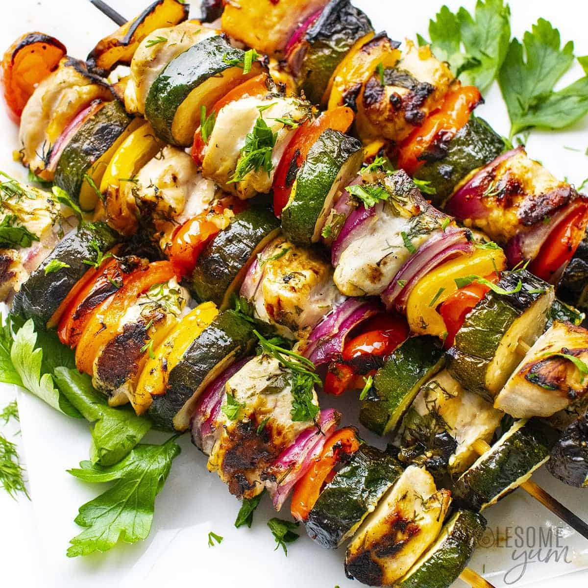
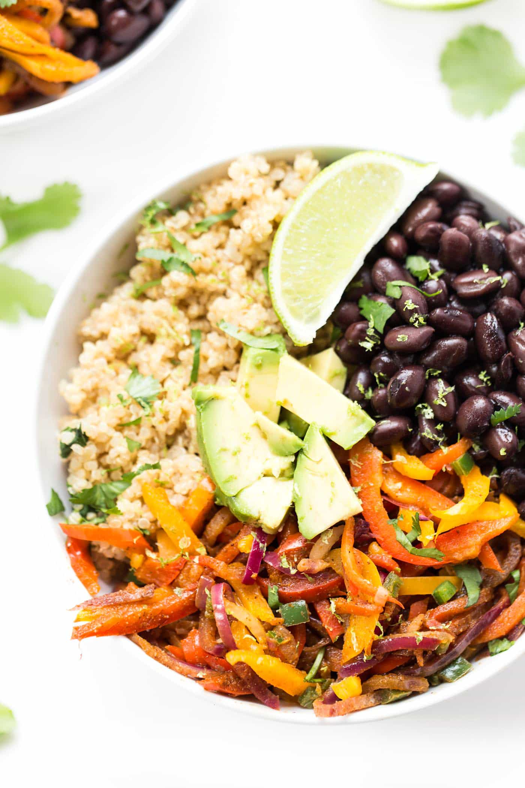
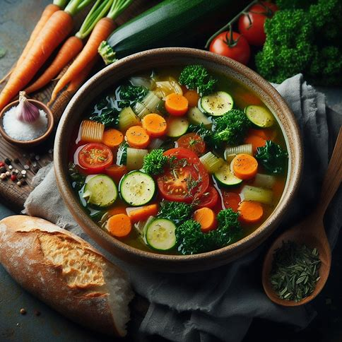

Delicious and low-calorie skewers made with grilled chicken breast, bell peppers, onions, and zucchini. Perfect for a satisfying yet light meal.
 Non-VegetarianA nutritious salad featuring quinoa, black beans, corn, cherry tomatoes, and cilantro. Packed with protein and fiber to keep you full and satisfied.
 VegetarianA hearty and comforting soup made with a variety of vegetables such as carrots, celery, onions, and spinach. Low in calories and rich in nutrients.
 Vegetarian